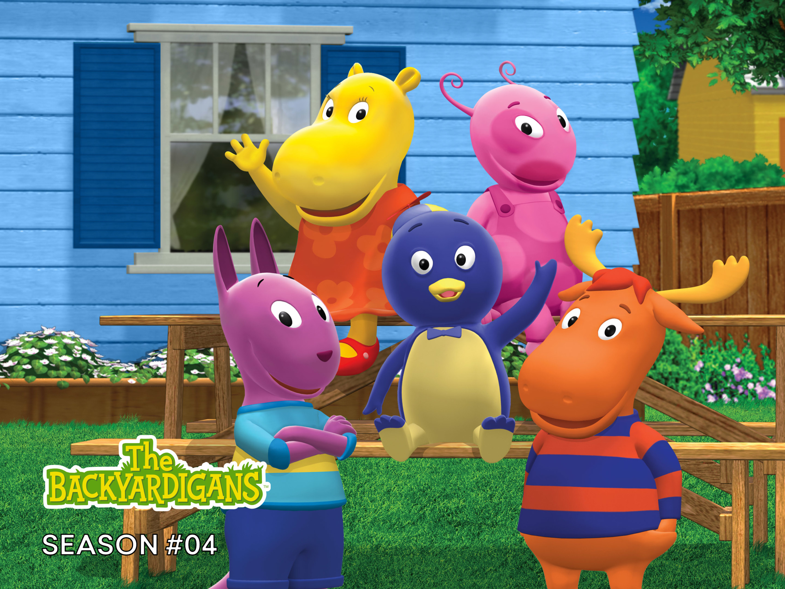

Clique para saber mais
o desenho Backyardigans foi um desenho que fez muita parte da minha infâcia ali pelos anos de 2014,pois sou apenas uma criança.
o desenho Backyardigans foi um desenho que fez muita parte da minha infâcia ali pelos anos de 2014,pois sou apenas uma criança.